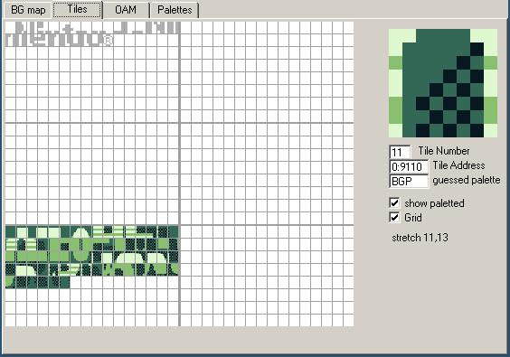

タイル
💭
「タイル」の呼び方は、昔の文書では「パターン」や「キャラクター」と呼ばれており、後者から「CHR」という略語が生まれ、タイルのことを指すこともある。
例えばファミコンの場合、タイルデータは通常カートリッジからCHR ROMまたはCHR RAMで提供されますが、ゲームボーイでは通常「CHR」という用語は使われず、コミュニティ間のやり取りで用語が「漏れる」ため、例えばタイルを格納するVRAMの領域を「CHR RAM」または「CHR VRAM」と呼ぶ人もいるようです。
このような専門用語のように、その意味はあなたが話している人に依存するかもしれませんが、私は一貫性のために、このチュートリアル全体で「タイル」に固執する、何が今GBの開発者のコミュニティで最も標準的であること。
さて、このデータをやみくもにコピーするのはいいのですが、具体的になぜ「グラフィック」なのでしょうか？
あ、そうだ、画素だ。
見てみよう
役に立つ手
しかし、BGBにはVRAMビューアがあります。 ウィンドウ」→「VRAMビューア」を選択するか、デバッガにフォーカスがあるときにF5キーを押すと開くことができます。 また、画面の右クリックメニューの「その他」にも入っています。

By default, it should open on the “Tiles” tab like in the image, but if not, please select that. We will come to the other tabs in due time. This one shows the tiles present in the Game Boy’s video memory (or “VRAM”).
🤔
I encourage you to experiment with the VRAM viewer, hover over things, tick and untick checkboxes, see by yourself what’s what. Any questions you might have will be answered in due time, don’t worry! And if what you’re seeing later on doesn’t match my screenshots, ensure that the checkboxes match mine.
Don’t mind the “Nintendo” in the top-left; we did not put it there ourselves, and we will see why it’s there later. We will also be ignoring the right half of the tile grid, as it is exclusive to the Game Boy Color: we will get there when we get there.
Short primer
You may have heard of tiles before, especially as they were really popular in 8-bit and 16-bit systems. That’s no coincidence: tiles are very useful. Instead of storing every on-screen pixel (144 × 160 pixels × 2 bits/pixel = 46080 bits = 5760 bytes, compared to the console’s 8192 bytes of VRAM), pixels are grouped into tiles, and then tiles are assembled in various ways to produce the final image.
In particular, tiles can be reused very easily and at basically no cost, saving a lot of memory! In addition, manipulating whole tiles at once is much cheaper than manipulating the individual pixels, so this spares processing time as well.
The concept of a “tile” is very general, but on the Game Boy, tiles are always 8 by 8 pixels. Often, hardware tiles are grouped to manipulate them as larger tiles (often 16×16); to avoid the confusion, those are referred to as meta-tiles.
“bpp”?
You may be wondering where that “2 bits/pixel” figure earlier came from… This is something called “bit depth”.
See, colors are not stored in the tiles themselves! Instead, it works like a coloring book: the tile itself contains 8 by 8 indices, not colors; you give the hardware a tile and a set of colors—a palette—and it colorizes them! (This is also why color swaps were very common back then: you could create enemy variations by storing tiny palettes instead of large different graphics.)
Anyway, as it is, Game Boy palettes are 4 colors large.1 This means that the indices into those palettes, stored in the tiles, can be represented in only two bits! This is called “2 bits per pixel”, noted “2bpp”.
With that in mind, we are ready to explain how these bytes turn into pixels!
Encoding
As I explained, each pixel takes up 2 bits. Since there are 8 bits in a byte, you might expect each byte to contain 4 pixels… and you would be neither entirely right, nor entirely wrong. See, each row of 8 pixels is stored in 2 bytes, but neither of these bytes contains the info for 4 pixels. (Think of it like a 10 € banknote torn in half: neither half is worth anything, but the full bill is worth, well, 10 €.)
For each pixel, the least significant bit of its index is stored in the first byte, and the most significant bit is stored in the second byte. Since each byte is a collection of one of the bits for each pixel, it’s called a bitplane.
The leftmost pixel is stored in the leftmost bit of both bytes, the pixel to its right in the second leftmost bit, and so on. The first pair of bytes stores the topmost row, the second byte the row below that, and so on.
Here is a more visual demonstration; note that it’s for the SNES, but its 2BPP format is the same as the Game Boy’s.
This encoding may seem a little weird at first, and it can be; it’s made to be more convenient for the hardware to decode, keeping the circuitry simple and low-power. It even makes a few cool tricks possible, as we will see (much) later!
You can read up more about the encoding in the Pan Docs and ShantyTown’s site.
In the next lesson, we shall see how colors are applied!
Other consoles can have varying bit depths; for example, the SNES has 2bpp, 4bpp, and 8bpp depending on the graphics mode and a few other parameters.